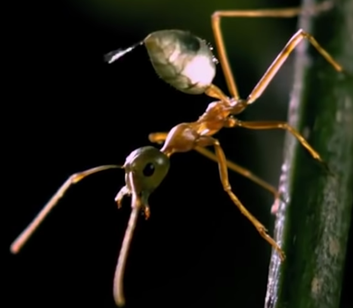

Yes, there are many types of ants, the most common and the ones you probably have in your garden or outside your house are weaver ants.
They may seem common, simple and normal to you, but it is because you do not know them, they build impenetrable fortresses with hundreds of guards. And all this why or for what? to protect what is most precious to them, the larvae and the queen
some guards ants generate hormones in the environment to alert the entire colony to an important event, such as an attack on the colony.
The most impressive thing about all this is that they are even capable of starting wars, stealing and taking over the entire enemy colony to steal their larvae, although soldier ants can defend themselves by biting or also throwing formic acid from their abdomen.

Giant ants exceed 5 times the size of a weaver ant (3 cm), they have strong jaws capable of cutting a weaver ant in half, no more remarkable is their strength and size, but weaver ants have a plan.
As the giant ant is very large, the weavers gather around it to hold and immobilize its legs, and proceed to bite them, then other ants taking advantage of this situation inject poison into it to kill it
Soldier ants are very similar to weavers, the only difference is that their face and jaw are gigantic, but for what? To have a powerful bite, there are many ranks and they are not the same in all colonies but the most common are: soldier, sergeant and major, they are like those who direct the guards, those who take command in a conquest of an enemy colony.
These ants are the real terror of weaver ants, they are fast, strong and have jaws as big as scissors, THEY ALSO HAVE POISON. They are nomads, they migrate from one place to another without building an anthill, they only steal and loot those they find, they are so powerful that they can kill spiders, crickets, scallops, scorpions and even beetles, the only way not to die is to stop making noise. since they are almost blind and they will not be able to find you